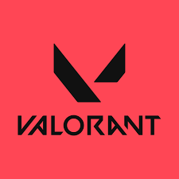
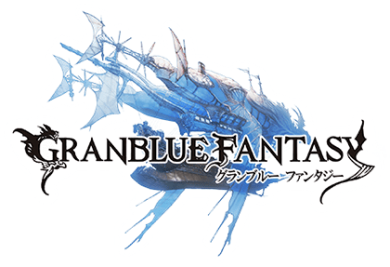
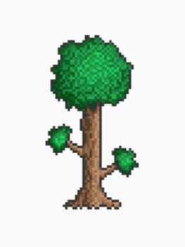

-

1 Genshin Impact for its story, characters, and elemental system.
-

2 Valorant for its competitive nature.
-

3 Granblue Fantasy for its variety of characters and grindy nature.
-
4 Dark Souls Series for its intense combat and fulfilling victories.
-

5 Terraria for the sandbox, bosses, and combat-focused gameplay.
Facts and Questions about me
1. When did you graduate UC Davis??
I graduated June of 2020.
2. What is your favorite genres of games?
My favorite genres would probably be RPG and FPS games.
3. How do you feel about the LGBTQ community?
They are humans just like me. I am all for it!
4. What is your most preferred programming languages?
I coded most often with C++ in college, but I definitely enjoyed python more. I also know C# with unity.
5. Why did you choose Game Designer/Tester as your career choice?
I have always enjoyed playing games my whole life.
My dream is to actually make my own game and making it the biggest game on the market.
Being a game designer is just the first step to that dream:D!
6. If you wanted to become a Game Designer/Tester, why did you try to be a professional gamer?
I have always been above average when it comes to gaming. After college I decided to test my potential by breaking free of my comfort zone and trying out for some teams.
7. What languages do you speak?
I am proficient in English and Cantonese. I have also taken classes in Spanish and Japanese, but am not proficient in them.
8. What other games have you played?
Mobile: Arknights, World flipper, Neural Cloud, Dragalia Lost, Valiant Forces, Nikke, etc.
PC: Sekiro, The Last Spell, CSGO, Raft, Minecraft, Diablo 3, Valheim, 7 days to die, Bloons TD Series, Escape from Tarkov, Escape Simulator, Forager, etc.
Console: Dynasty Warriors, Armoured Core, Ratchet and Clank series, Spyro the Dragon, Tenchu, Gradius V, Time Splitters 2, Grand Theft Auto series, etc.